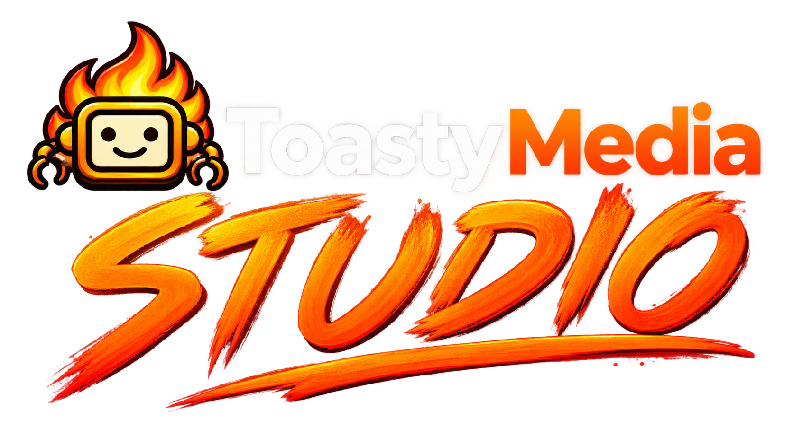

CREATOR MODE
Create videos with your own tools.
Capture gameplay, reactions, voiceovers and tutorials, stream with a friend, or connect the tools you already use.Ready when you are.Choose Capture game / screen.
Creator mode ready.

CREATOR MODE
Creator mode ready.